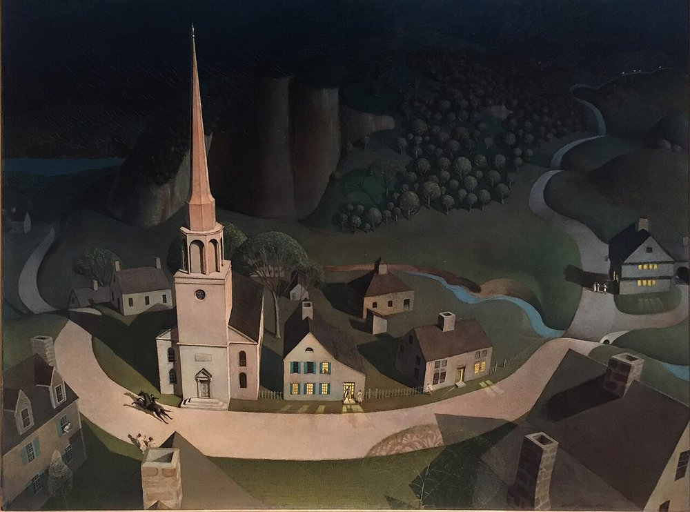

The Midnight Ride of Paul Revere
Grant Wood · 1931 · Oil on Masonite · 76.2 × 101.6 cm · The Metropolitan Museum of Art, New York
In copyright. Look and learn: shown for study, not for download.
Wood used a child's hobby horse as the model for Revere's horse. The painting belonged to Mr. and Mrs. Cecil M. Gooch of Memphis, Tennessee, from 1931 to 1950, when it was given to the YWCA in Memphis. It was sold the same year to the Metropolitan Museum of Art for $15,000.